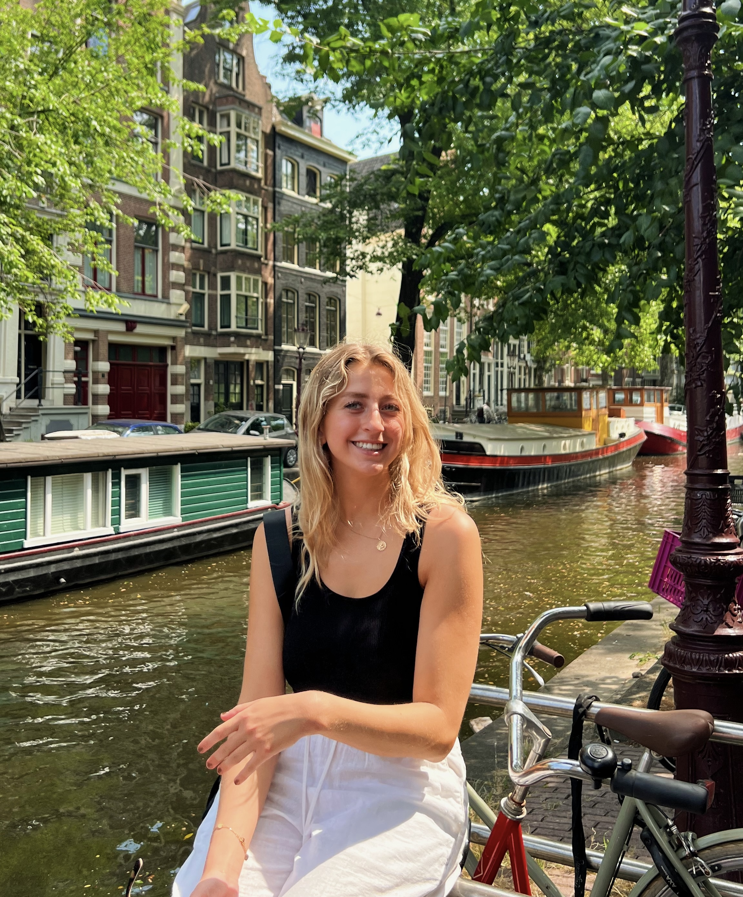

about me
Hi! My name is Izzy, and I'm currently a student at the University of Michigan studying Computer Science Engineering with a minor in UX Design. Outside of academics, two of my main hobbies and passions are traveling and photography!
I was born in the UK and immigrated with my parents to the US at 3 years old, and the majority of my extended family lives in Sweden. Growing up with family across the globe, I've had the opportunity to travel to 3 different continents and many countries. With this website, I hope to showcase some of my favorite places that I have visited and the photography that I got to do there. In the future, I hope to visit every single continent and continue immersing myself in a variety of different cultures, taking pictures as I go!
Every image on this site was shot on my iPhone 12 camera.
Below is an interactive map, where you can click on various continents.
The three continents/regions that I have traveled to this far include: North America, Latin America, and Europe. Feel free to click on any of the three and witness my travels there!